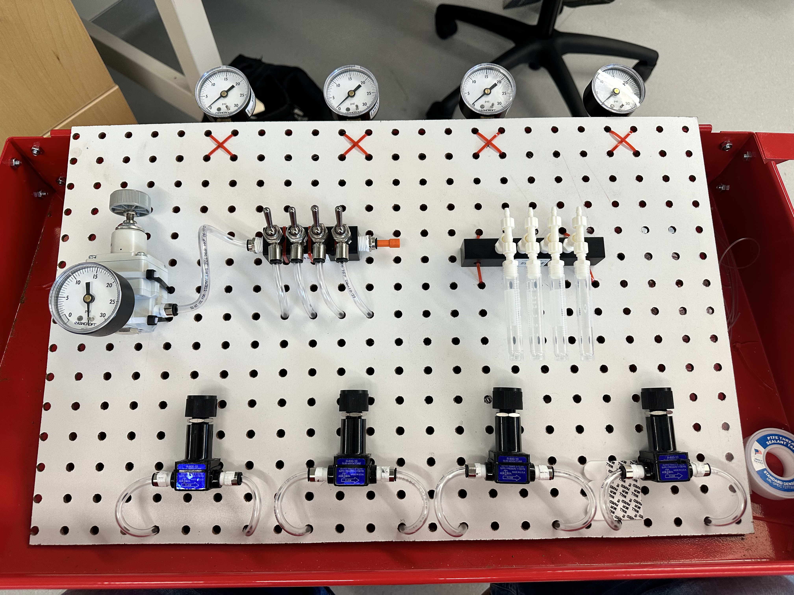
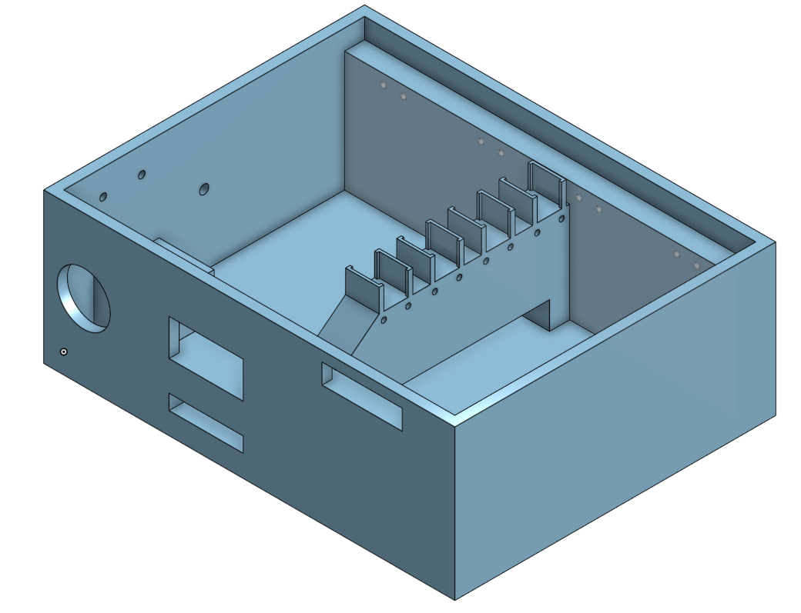
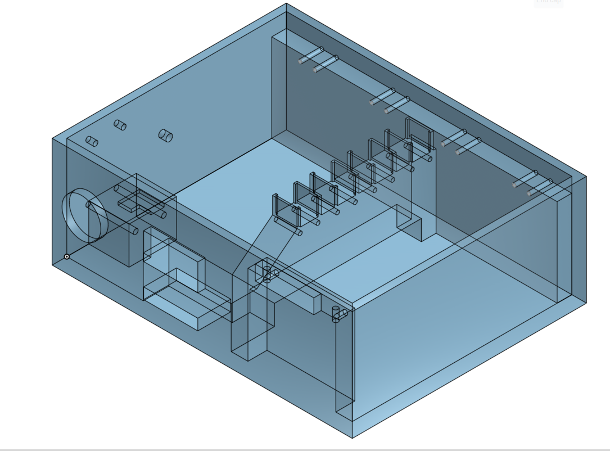
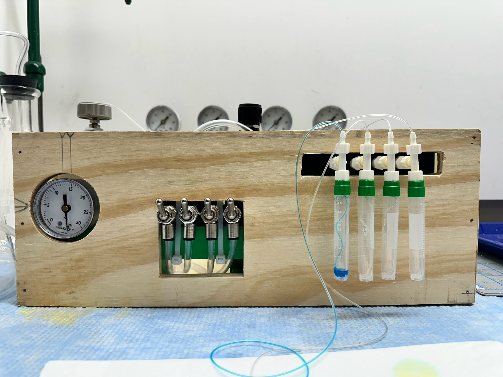
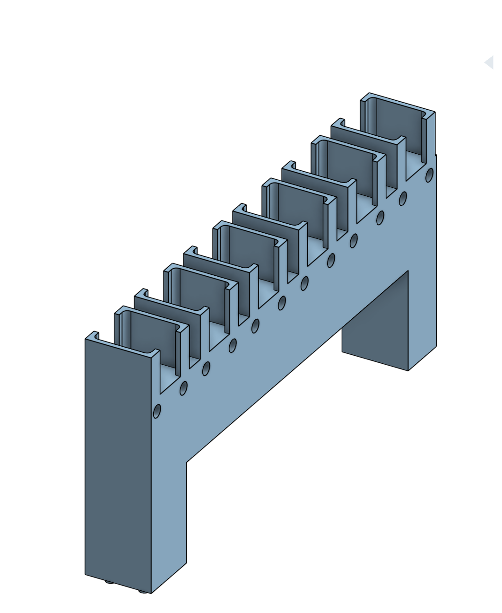
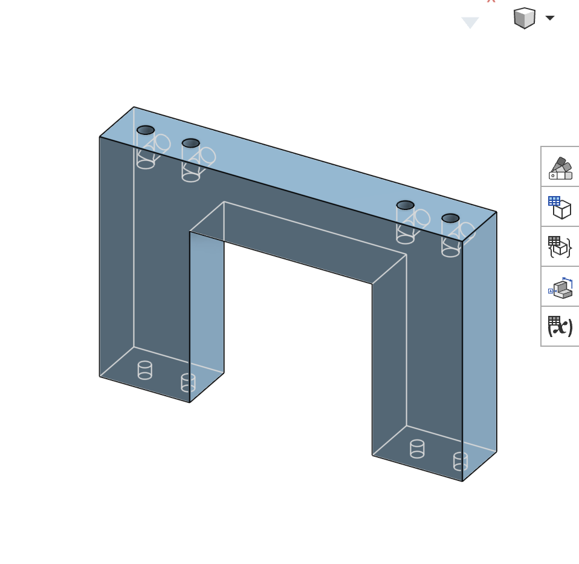
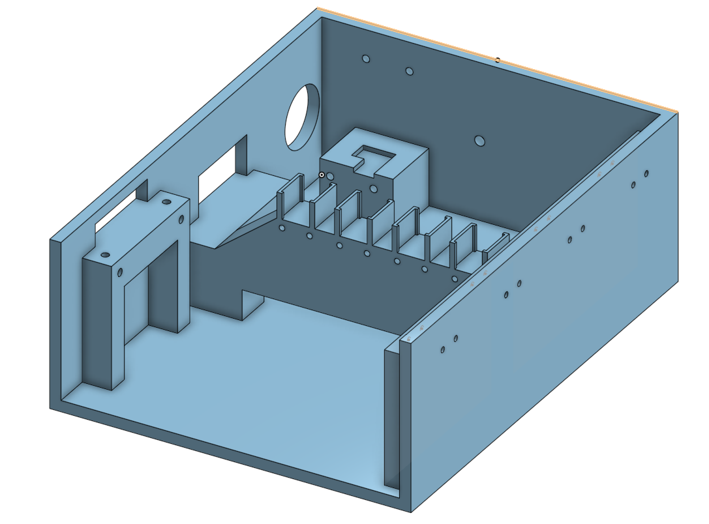
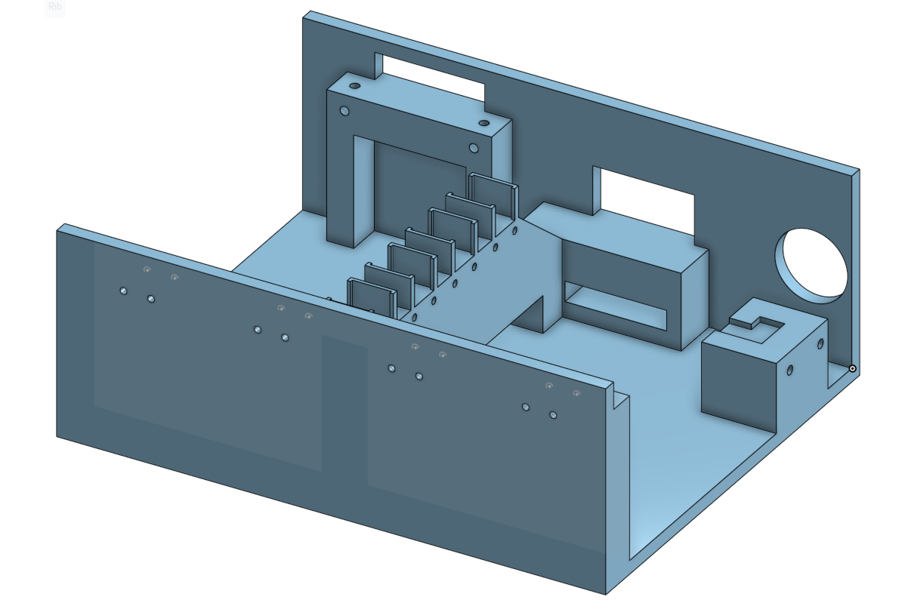
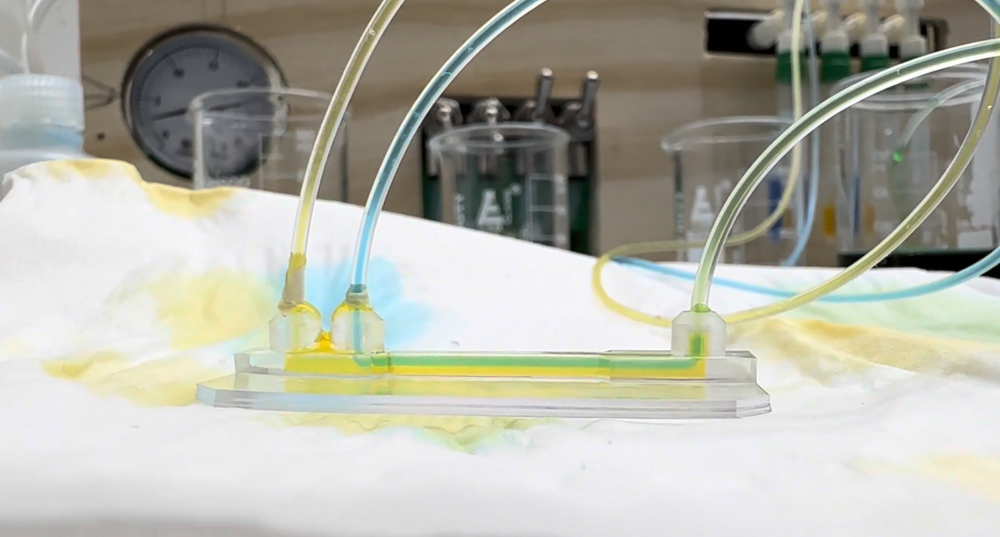

Pneumatic Flow Control System
Design and development of a four-channel pneumatic liquid-delivery system for microfluidic research, created to address the flow oscillations observed with mechanically driven syringe pumps.

Second-generation pneumatic flow control system.
Creating stable flow for microfluidic experiments
Graduate researchers conducting microfluidic experiments required stable liquid flow through small SLA-printed microchannels. Mechanically driven syringe pumps introduced periodic flow oscillations that caused the interface between fluid streams to move during experiments.
The objective was to develop an alternative fluid-delivery system using pneumatic pressure as the driving force while supporting independently adjustable liquid streams.
Four independently controlled pneumatic channels
A small air compressor supplied a primary pressure regulator, which fed a manifold dividing the pneumatic supply into four independently controlled channels. Each channel incorporated a pressure gauge, toggle valve and needle valve.
The controlled air supply was routed to liquid reservoirs, where pneumatic pressure displaced the working fluid and delivered it to the microfluidic device.
From open proof of concept to integrated enclosure
The first prototype used an open pegboard arrangement so the pneumatic architecture and component placement could be assembled, adjusted and tested with easy access to the regulator, manifolds, valves, reservoirs and tubing.

Prototype 1 — open pegboard layout used to develop and test the pneumatic architecture.
After the operating concept was established, I redesigned the system as an integrated enclosure in Onshape, including component placement, mounting locations, pass-throughs and internal supports.


Choosing practical fabrication methods
The available FDM printer could not manufacture the enclosure as a single piece. Rather than divide it into multiple printed sections and introduce unnecessary structural joints, I fabricated the primary enclosure from wood and reserved additive manufacturing for specialized mounting hardware.

Custom mounts and risers were modeled in Onshape and FDM printed to integrate off-the-shelf pneumatic components into the enclosure.




Evaluating flow stability
Average liquid flow rate was evaluated gravimetrically by collecting effluent over a measured time interval. Dynamic behavior was evaluated visually using two differently colored water streams inside the microfluidic channel.
With the mechanical syringe-pump setup, the interface between the streams visibly moved back and forth as the flow oscillated. Under pneumatic operation, the interface remained visually stable, and its position could be shifted by adjusting the relative inlet pressures.

Food-colored water used to visualize the interface between independently controlled liquid streams.
The SLA-printed microfluidic device originated from an existing research design. I modified the inlet geometry to improve tubing fit and sealing for integration with the pneumatic delivery system.
Independent undergraduate engineering project
I completed the pump development as an individual undergraduate research project under faculty supervision while supporting graduate researchers working with microfluidic systems.
The completed platform provided independently adjustable pneumatic liquid delivery and a visibly stable fluid interface during microfluidic testing. The project combined fluid mechanics, pneumatic control, CAD, prototyping, fabrication and experimental validation in one iterative engineering workflow.